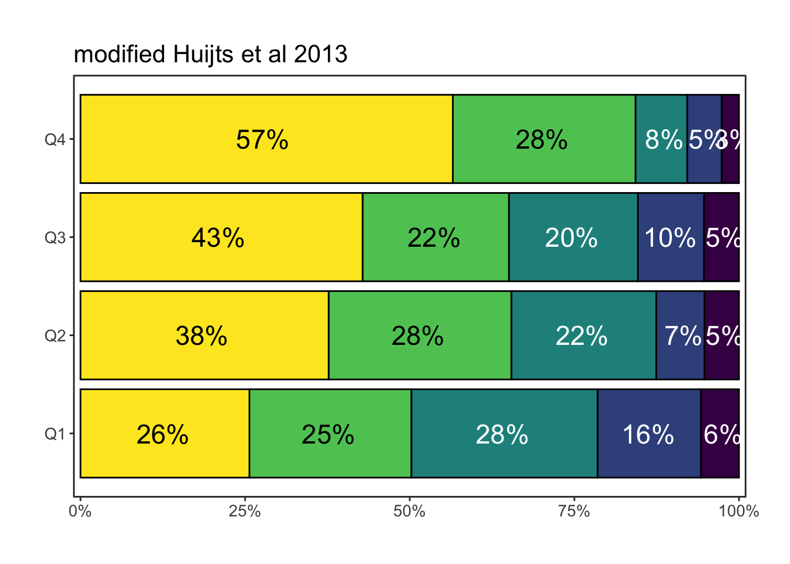

![]()
| SVD scoring system | |
|---|---|
| Annotation | modified Huijts et al 2013 |
| Microbleeds subscore | |
| 0 | 0 |
| 1 | 1 |
| 2-4 | 1 |
| 5-10 | 1 |
| >10 | 1 |
| Lacunes subscore | |
| 0 | 0 |
| 1 | 1 |
| 2 | 1 |
| 3-5 | 1 |
| >5 | 1 |
| WMH subscore | |
| 0: Absent | 0 |
| 1: Punctate foci | 0 |
| 2: Beginning confluence | 1 |
| 3: Large confluent areas | 1 |
| Atrophy subscore | |
| 0: No atrophy | 0 |
| 1: Mild | 0 |
| 2: Moderate | 1 |
| 3: Severe | 1 |
SVD analyses and data exploration
These are the planned analyses, tables and figures for the main article.
Drop all the questions and save them for a later specific publication.
Agreed upon scoring overview:
Baseline table
| Baseline characteristics | |
|---|---|
Characteristic |
N = 762 1 |
| Age | 71 (62, 79) |
| Female sex | 279 (37%) |
| Pre-stroke PASE score | 108 (60, 161) |
| Smoking | |
| never | 269 (36%) |
| current | 211 (28%) |
| prior | 262 (35%) |
| Hypertension | 418 (55%) |
| Diabetes | 85 (11%) |
| Previous ischemic event | 97 (13%) |
| 1
Median (Q1, Q3); n (%) |
|
[[1]]
Planned analyses
| Planned minimally adjusted analyses | ||||
|---|---|---|---|---|
Characteristic |
No PA adjustment |
With PA adjustment |
||
OR 1 |
95% CI 1 |
OR 1 |
95% CI 1 |
|
| Hypertension | 1.91 | 1.43, 2.54 | 1.88 | 1.41, 2.50 |
| Diabetes | 1.46 | 0.96, 2.22 | 1.40 | 0.92, 2.13 |
| Smoking | ||||
| never | — | — | — | — |
| current | 1.63 | 1.14, 2.34 | 1.55 | 1.08, 2.23 |
| prior | 1.44 | 1.04, 2.00 | 1.41 | 1.02, 1.97 |
| Previous ischemic event | 2.28 | 1.52, 3.41 | 2.21 | 1.48, 3.31 |
| 1
OR = Odds Ratio, CI = Confidence Interval |
||||
Independent correlations in multivariable analysis
| Uni- and multivariable analyses | |||||
|---|---|---|---|---|---|
Characteristic |
Univariable |
Multivariable |
|||
N |
OR 1 |
95% CI 1 |
OR 1 |
95% CI 1 |
|
| Age | 762 | 1.09 | 1.08, 1.11 | 1.08 | 1.07, 1.10 |
| Female sex | 762 | 1.19 | 0.91, 1.55 | 0.89 | 0.66, 1.20 |
| Hypertension | 761 | 2.89 | 2.21, 3.79 | 1.79 | 1.33, 2.40 |
| Diabetes | 761 | 1.50 | 1.00, 2.23 | 1.35 | 0.88, 2.08 |
| Smoking | 742 | ||||
| never | — | — | — | — | |
| current | 1.01 | 0.73, 1.41 | 1.57 | 1.09, 2.28 | |
| prior | 1.69 | 1.24, 2.32 | 1.33 | 0.96, 1.86 | |
| Previous ischemic event | 758 | 2.57 | 1.73, 3.81 | 2.08 | 1.38, 3.14 |
| Pre-stroke PA quartile | 762 | ||||
| Q1 | — | — | — | — | |
| Q2 | 0.57 | 0.39, 0.81 | 0.66 | 0.45, 0.97 | |
| Q3 | 0.52 | 0.36, 0.75 | 0.86 | 0.58, 1.29 | |
| Q4 | 0.26 | 0.17, 0.37 | 0.56 | 0.37, 0.86 | |
| 1
OR = Odds Ratio, CI = Confidence Interval |
|||||